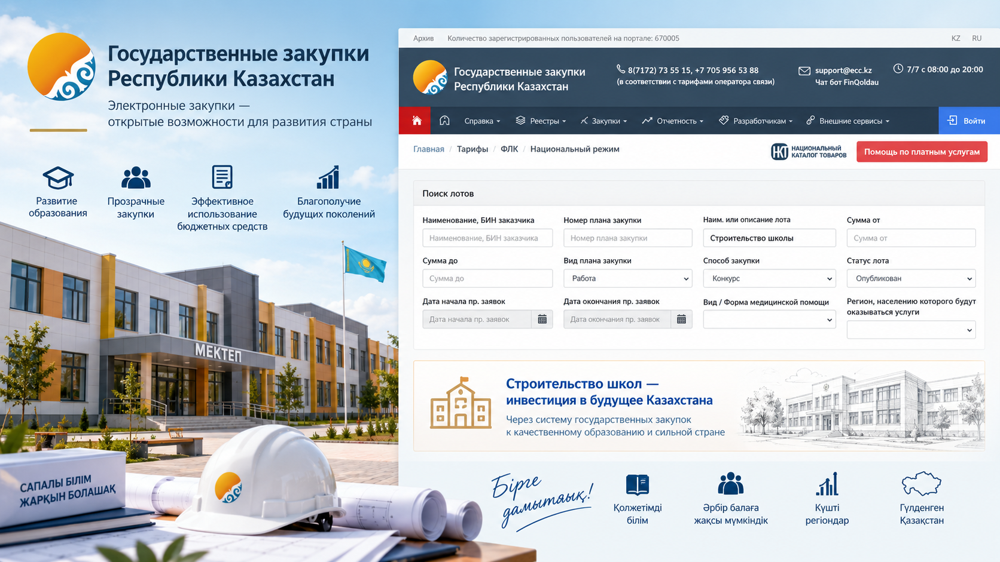
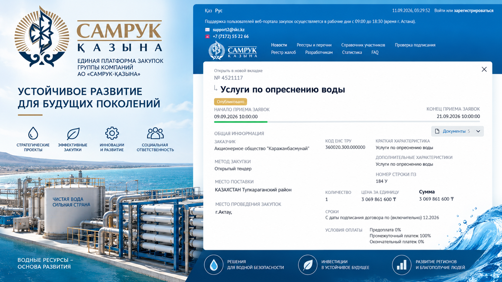
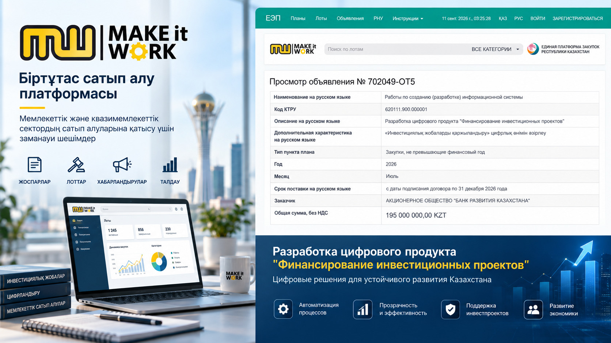
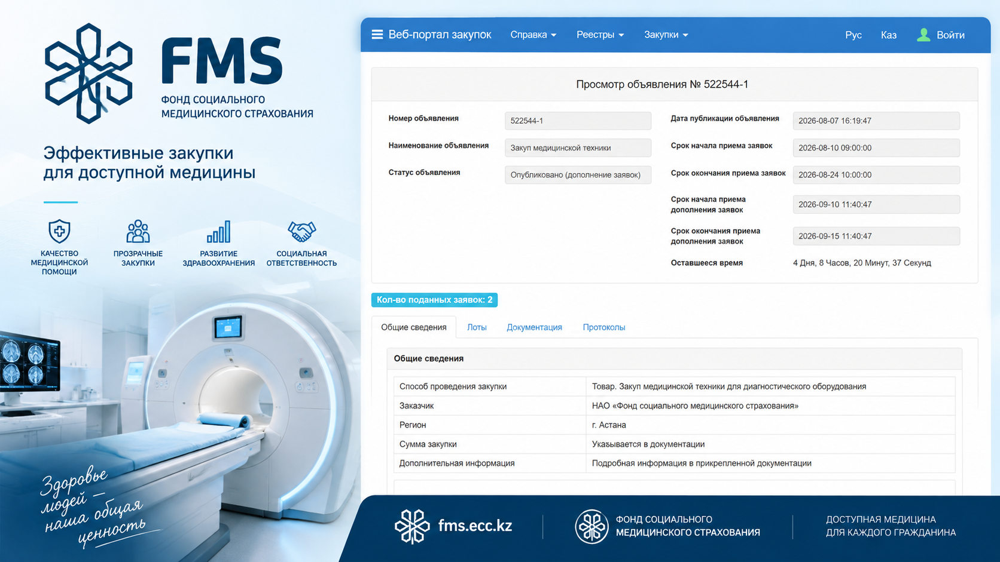
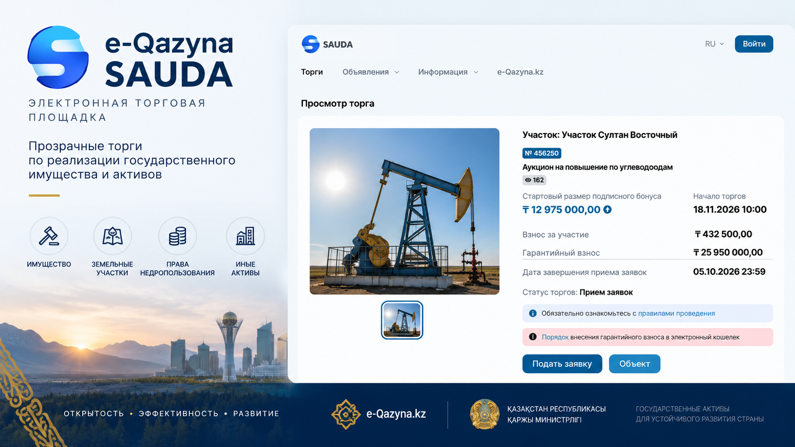

Юридическое и практическое сопровождение поставщиков, предпринимателей и компаний при участии в государственных, квазигосударственных и иных электронных закупочных процедурах.
Работа может включать анализ закупки, подготовку документов, формирование и подачу заявки, сопровождение процедуры, договорную работу и защиту интересов участника.
Участие в закупке требует одновременного контроля юридических, технических и процедурных вопросов. Работа может строиться от первоначального анализа объявления до заключения и исполнения договора.
Анализ предмета закупки, требований заказчика, сроков и возможности участия компании.
Проверка квалификационных требований, технической спецификации, условий и рисков.
Формирование необходимого пакета документов с учётом требований конкретной процедуры.
Практическое сопровождение формирования и подачи электронной заявки на соответствующей площадке.
Контроль этапов процедуры, результатов, допусков и юридически значимых действий.
Анализ договора, сопровождение его заключения, исполнения и возникающих разногласий.
Для участия в электронной закупке недостаточно только понимать законодательство. На практике предприниматели и сотрудники компаний сталкиваются с интерфейсами различных площадок, регистрацией, формированием электронных заявок, прикреплением документов, сроками и последовательностью действий.
В рамках поручения возможно практическое сопровождение процедуры с использованием соответствующей электронной площадки — от подготовки материалов до подачи заявки и контроля дальнейших этапов закупки.
Каждая электронная площадка имеет собственную структуру, процедуры, требования к документам и порядок совершения электронных действий.

Сопровождение поставщиков при участии в государственных закупках: от анализа объявления и закупочной документации до подачи заявки, результатов процедуры и договорной стадии.

Практическое и юридическое сопровождение компаний, участвующих в закупках организаций группы Самрук-Қазына и связанных электронных процедурах.

Сопровождение участников закупочных процедур, проводимых через электронные системы MITWORK, с учётом правил конкретного заказчика и применяемого порядка закупок.

Сопровождение компаний при участии в закупочных процедурах медицинского и фармацевтического сектора через соответствующий электронный портал.
На портале размещаются закупочные процедуры, связанные, в частности, с Фондом социального медицинского страхования и СК-Фармация. :contentReference[oaicite:0]{index=0}

Юридическое сопровождение участия в электронных торгах по продаже имущества, а также иных процедурах, проводимых через электронную торговую площадку.
На различных стадиях могут возникать вопросы допуска, результатов закупки, заключения и исполнения договора, обеспечения обязательств и судебной защиты.
Анализ условий закупки, технической спецификации, квалификационных требований и потенциальных юридических рисков.
Подготовка правовой позиции и документов при нарушении прав участника закупочной процедуры.
Юридическая защита в госзакупках →Проверка условий договора, обеспечение исполнения, сроки, ответственность и возникающие разногласия.
Правовой анализ рисков и судебное представительство по вопросам включения поставщика в соответствующий реестр.
Юридическое сопровождение при неоплате, нарушении договорных обязательств и взыскании задолженности.
Представительство в суде по спорам, связанным с закупочными процедурами и исполнением договоров.
Для компании, которая планирует участвовать в закупках не эпизодически, а системно, требуется выстроенный внутренний процесс: поиск подходящих процедур, оценка возможности участия, подготовка документов, контроль сроков, подача заявок, договорная работа и контроль исполнения обязательств.
Практический опыт включает организацию работы направления государственных закупок в коммерческой компании и построение процесса участия в закупках.
Когда бизнес обладает товаром, услугой или производственными возможностями, но не имеет сотрудника, который постоянно работает с электронными закупочными системами.
Для компаний, которые уже участвуют в закупках, но сталкиваются со сложными процедурами, договорами, жалобами или судебными спорами.
Для поиска дополнительных каналов реализации товаров через государственный и квазигосударственный сектор.
Для понимания закупочных процедур Казахстана, подготовки документов и организации юридического сопровождения участия.
Сопровождение может включать не только юридическую консультацию, но и практическую подготовку материалов и работу по формированию и подаче заявки в пределах предоставленного поручения и требований конкретной электронной системы.
Да. Предварительный анализ позволяет проверить требования, сроки, техническую спецификацию, документы и потенциальные юридические риски ещё до принятия решения об участии.
Да. В зависимости от задач работа может строиться как по отдельной закупке, так и в формате системного сопровождения закупочной деятельности компании.
Возможно выстроить внутренний процесс работы с закупками: поиск процедур, распределение функций, подготовку документов, контроль сроков, заявок, результатов и договоров.
Необходимо анализировать конкретную процедуру, документацию, протоколы и применимый порядок обжалования. При наличии правовых оснований может быть подготовлена жалоба или судебная позиция.
Направьте ссылку на закупку, номер объявления или документы. После анализа можно определить порядок участия, юридические риски и необходимый объём сопровождения.